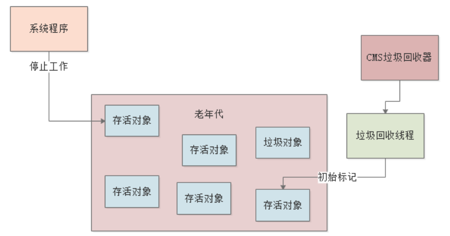
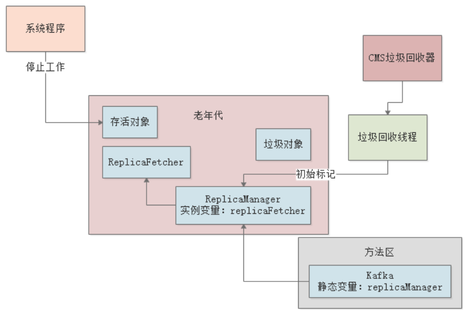
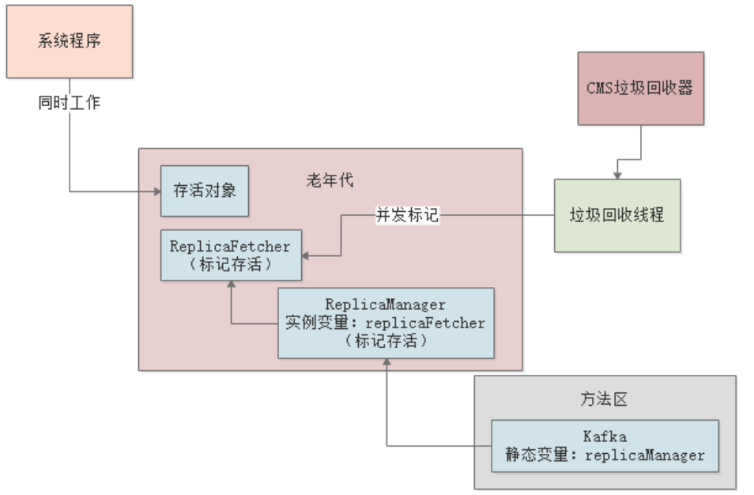
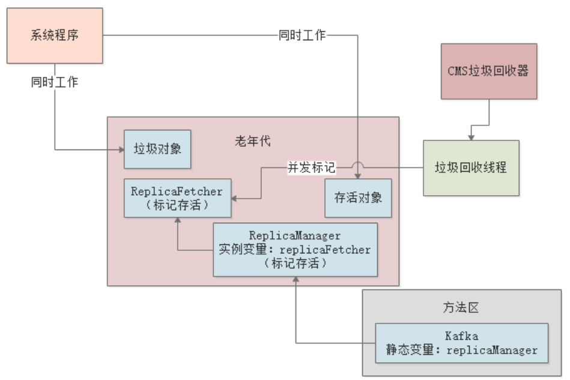
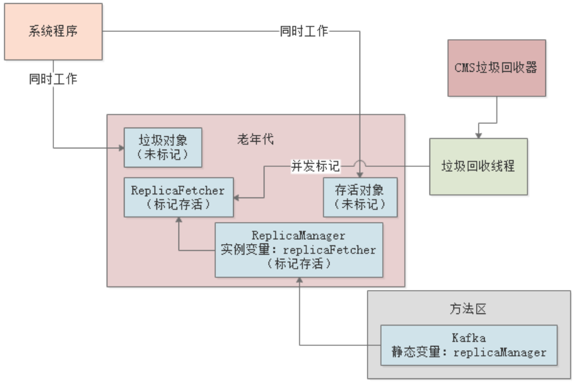
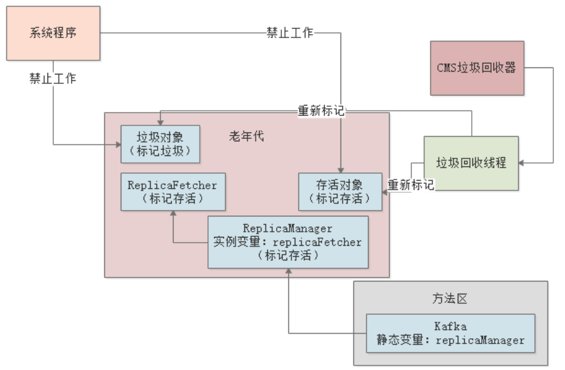
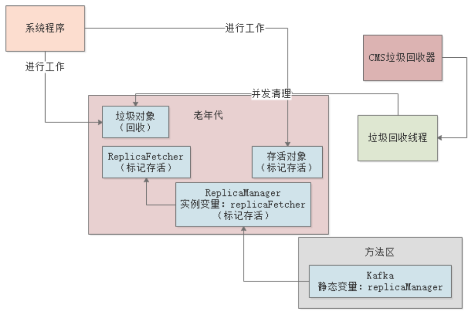
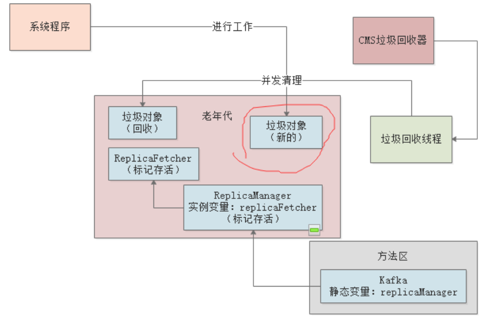

理想情况下，我们都希望自己的系统能在每次Minor GC后，存活对象都能转移到Survivor区，避免进入老年代。但真实情况是，线上系统很可能因为各种各样的情况，导致很多对象进入老年代，甚至频繁触发老年代的Full GC。所以，我们必须对老年代的垃圾回收器的执行原理有一个清晰的认识，才能在出现问题时及时应对。
老年代的垃圾回收，我们一般会选择CMS垃圾回收器，它采用的是标记清除（mark-sweep）算法。关于标记清除算法，我们已经在JVM垃圾回收算法一文中详细介绍过了标记清除算法，标记清除与标记整理的区别就是它标记完垃圾对象后直接清理掉，这个会造成内存碎片过多的问题，后面会讲到。
针对老年代进行垃圾回收时，CMS也会出现”Stop the World“现象，之前的文章也说过，如果挂起一切工作线程，然后慢慢地去执行”mark-sweep“算法，会导致系统”卡顿“时间过长，很多响应无法处理。CMS采取的策略是：垃圾回收线程和系统工作线程尽量并行执行。
CMS在执行一次垃圾回收的过程一共为4个阶段：
下面我们来对每一阶段进行分析。
CMS进行垃圾回收时，首先会执行初始标记，这个阶段会让系统的工作线程全部挂起，进入“Stop the World”状态，初始标记，就是标记“GC Roots”能够引用到的对象。如下图：

我们还是以示例代码来看下整个过程：
public class Kafka {
public static ReplicaManager replicaManager = new ReplicaManager();
}
public class ReplicaManager {
public ReplicaFetcher replicaFetcher = new ReplicaFetcher();
}
假设上面代码对应的JVM内存结构如下图：

那么初始标记时，静态变量replicaManager所引用的ReplicaManager对象就会被标记出来，但ReplicaFetcher对象不会被标记，因为类的静态字段和方法的局部变量可以作为“GC Roots”，而类的普通实例字段不能。
初始标记阶段，虽然会出现“Stop the World”，但其实影响不大，因为从“GC Roots”去标记存活对象的效率很高。另外， 可以通过设置参数
-XX:+CMSParallelInitialMarkEnabled开始多线程的初始标记，减少STW时间，以提升性能。
接着，进入并发标记阶段，该阶段系统的工作线程可以随时创建各种对象。与此同时，垃圾回收线程会尽可能的对已有的对象进行GC Roots追踪。
所谓GC Roots追踪，就是对老年代里的ReplicaFetcher这类对象，看看被谁引用了？比如ReplicaFetcher对象被ReplicaManager对象的replicaFetcher字段引用，而ReplicaManager对象又被Kafka类的静态字段replicaManager引用。
那么此时，CMS就会认为ReplicaFetcher这个对象其实是被GC Roots间接引用的，所以不需要回收它，可以把它标记存活，如下图：

但是在并发标记的过程中，由于系统在不停的工作，可能会创建出来新的对象，也可能一些旧的对象失去引用，如下图：

并发标记的时候，需要对GC Roots进行深度追踪，看所有对象里到底有多少是存活的，而老年代中的对象存活率又比较高，所以这个过程会追踪大量的对象，比较耗时。
并发标记阶段，其本质就是追踪老年代中的所有对象能否直接或间接被GC Roots引用，这个过程是跟垃圾回收线程并行进行的，所以虽然很耗时，但不会对系统运行造成较大影响。
在第二阶段，一边是GC线程标记着存活对象和垃圾对象，另一边是工作线程不停的创建新对象和让老对象失去引用，所以当第二阶段结束后，会有很多存活对象和垃圾对象是没有被标记出来的：

所以，重新标记阶段的工作，就是让系统停下来，进入“Stop the World”，然后再重新标记一下第二阶段里新创建和新失去引用的那些对象：

重新标记阶段，虽然会发生“Stop the World”，但速度是很快的，因为只是对第二阶段中因为并行而变动过的少数对象进行标记。另外，可以通过设置参数
-XX:+CMSScavengeBeforeMark，让重新标记之前尽量先先执行一次Young GC，那么重新标记的时候就可以少扫描一些对象，以提升该阶段的性能。
重新标记完成后，就会恢复工作线程，进入最后的并发清理阶段。该阶段垃圾回收线程和工作线程是并行运行的，垃圾回收线程会清理之前标记为垃圾的对象：

并发清理需要将垃圾对象从各种随机的内存位置清理掉，所以也比较耗时。
并发清理阶段和并发标记阶段一样，是比较耗时的，但是不会挂起工作线程，所以基本不影响系统的运行。
CMS为了避免长时间的”Stop the World“，采用了4个阶段进行垃圾回收，其中初始标记和重新标记阶段虽然会”Stop the World“，但是耗时很短，所以影响不大；并发标记和并发清理阶段虽然耗时较长，但是可以跟工作线程并行执行，所以影响也不大。
那么，CMS就很完美了吗？显示不是，我们来看下CMS的这种垃圾回收方式可能会出现什么样的问题。
CMS垃圾回收器有一个最大的问题，就是并发标记和并发清理阶段，工作线程和垃圾回收线程同时运行，而这两个阶段又比较耗时，所以会导致有限的CPU资源长时间被垃圾回收线程占用。
CMS启动时默认的垃圾回收线程数量是：(CPU核数+3)/4。假设我们用最普通的机器（2核4G）来测算，（2+3）/4=1，也就是说GC线程会占去一个CPU。
CMS垃圾回收器的另一个问题就是Concurrent Mode Failure。所谓 Concurrent Mode Failure，就是指在并发清理阶段，有一些原来是新生代的对象将晋升到老年代，而此时老年代的可用空间又不够了，就会发生Concurrent Mode Failure。我们来看下整个过程：
首先，在并发清理阶段，由于工作线程也在并行运行，一些新生代对象晋升到了老年代，随后失去了引用，那这些对象就变成了老年代的”浮动垃圾“，因为它们已经错过了并发标记，只能等到下一次GC时被回收：

上图中的红圈部分就是一个浮动垃圾。为了应对出现”浮动垃圾“这种情况，CMS会在老年代预留一定的空间，如果CMS在垃圾清理期间，出现了浮动垃圾，且垃圾大小大于老年代中的预留空间，就会出现Concurrent Mode Failure。
当出现Concurrent Mode Failure时，CMS会自动让Serial Old垃圾收集器来替代自己，强行进行“Stop the World”，并重新进行GC Roots追踪，标记垃圾对象并清除，完事后才恢复工作线程运行。
综上，生产环境下，这个自动触发CMS垃圾回收的比例需要合理优化下，避免出现Concurrent Mode Failure问题。
CMS触发垃圾回收的时机，其中一个就是当老年代内存占用达到一定的比例，通过
-XX:CMSInitiatingOccupancyFaction参数可以设置这个比例，JDK1.6中默认是92%。
由于CMS采用标记整理算法对老年代的垃圾对象进行回收，所以会产生大量的内存碎片。如果内存碎片太多，会导致后续对象进入老年代找不到可用的连续空间，触发Full GC。
CMS有一个参数-XX:+UseCMSCompactAtFullCollection（默认打开），表示是否要在Full GC之后进行Stop the World，停止工作线程，然后进行老年代的内存碎片整理。
还有另外一个参数-XX:CMSFullGCsBeforeCompaction，意思是执行多少次Full GC之后再执行一次内存碎片整理工作，默认是0，即每次Full GC之后都会进行一次内存碎片整理。
通过上述对CMS垃圾回收器的执行流程分析，我们其实已经知道CMS专门针对“Stop the World”进行了优化：
但是，用CMS进行老年代的垃圾回收还是要比新生代的Minor GC慢十倍以上，原因很简单：
我们这里对Full GC的所有情况做一个总结：
-XX:CMSInitiatingOccupancyFaction参数指定的比例。最后，CMS也存在一些问题，比如CPU消耗、Concurrent Mode Failure、内存碎片等，需要通过一些参数进行合理配置，我们后面章节会通过案例进行讲解如何优化。